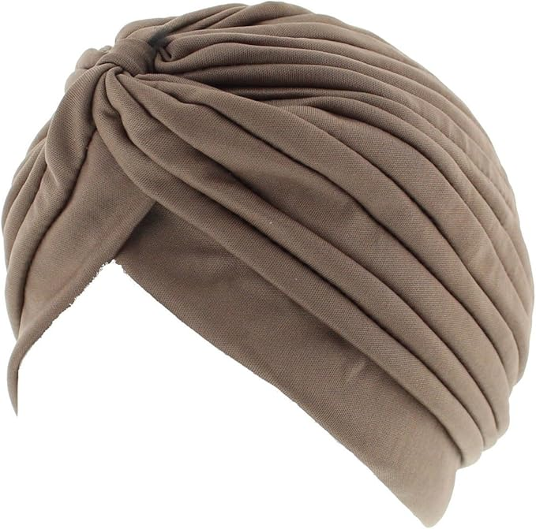
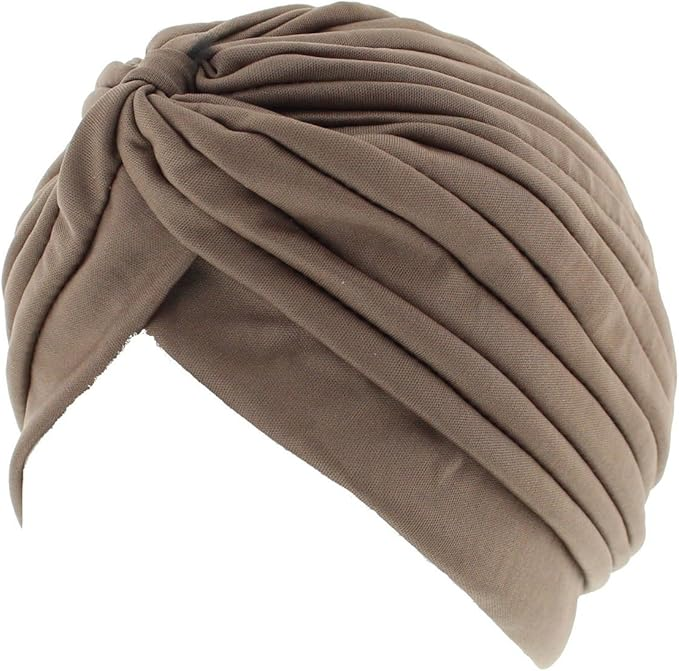

Experiment snapshot
This is a snapshot from my experiment

Welcome to the "Puzzling Brain" experiment guide. Below there is a picture of what the experiment looks like so you can see how an fNIRS works! After that, there are some pictures showing the types of hairstyles and head coverings that are incompatible with the fNIRS system (if you have one of those, you cannot take part in the experiment). If you have any questions, please contact me at this email: francesco.cio'.20@ucl.ac.uk
This is a snapshot from my experiment
These types of hairstyles can interfere with the fNIRS system.
Hair Extension
Permanent Braid
Dreadlocks
Here are some examples of headcovering items that may affect fNIRS readings.
 
